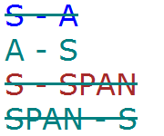

RX3007: 字体样式标签（U、B、S等）对某些 CSS 特性有影响
标准参考
根据 HTML4.01 规范，字体样式元素的渲染依赖于用户端，其中对字体样式元素描述如下：
- TT 元素，以“等宽”（monospaced）字体渲染；
- I 元素：以“斜体”（italic）样式渲染；
- B 元素：以“粗体”（bold）样式渲染；
- BIG 元素：以“大号”（large）文字渲染；
- SMALL 元素：以“小号”（small）文字渲染；
- STRIKE 元素与 S 元素：以“删除线”（line-through）样式渲染；
- U 元素：以“下划线”（underline）样式渲染。
如下面这段代码：
<P><b>bold</b>, <i>italic</i>, <b><i>bold italic</i></b>, <tt>teletype text</tt>, and <big>big</big> and <small>small</small> text.
可能渲染的效果为：
其中，STRIKE、S、U 已经被废弃（Deprecated）。此外，规范中还提到：嵌套着的字体样式元素的渲染取决于用户端。
关于 字体样式元素 的相关信息，请参考 HTML4.01 规范 15 Alignment, font styles, and horizontal rules 中的内容。
问题描述
IE6 IE7 IE8(Q) 中，对于 U-A 及 A-U 元素嵌套结构，只要最内层元素的 'text-decoration' 为 'none' ，则其内容文本就不会出现下划线。
IE6 IE7 IE8(Q) 中，对于 A 元素包含 S 元素，A 元素设置了 text-decoration:line-through ，S 元素设置了 text-decoration:none，而此时对于 S 元素，浏览器不再为其渲染删除线。
造成的影响
此问题不会造成布局上的差异，但会影响 'text-decoration' 特性渲染的文字修饰效果。
受影响的浏览器
| 所有浏览器 |
|---|
问题分析
首先分析 U 元素对 text-decoration:underline 的影响：U_A.html
<style>
body { font-size:32px; font-family:Verdana; }
a { color:blue; }
span { color:brown; }
s { color:teal; }
#d1 a { text-decoration:none; }
#d2 u { text-decoration:none; }
</style>
<body>
<div id="d1"><u><a href="#">U - A</a></u></div>
<div id="d2"><a href="#"><u>A - U</u></a></div>
<div id="d3"><u><span>U - SPAN</span></u></div>
<div id="d4"><span><u>SPAN - U</u></span></div>
</body>
上面代码中 A 元素均为蓝色，SPAN 元素均为棕色，U 元素均为橙色。有 4 个 DIV 元素【d1】、【d2】、【d3】、【d4】，前两个内包含 U 元素与 A 元素，元素嵌套顺序不同，后两个内包含 U 元素与 SPAN 元素，同样是元素嵌套顺序不同。
这段代码在各浏览器环境内运行效果如下：
| IE6 IE7 IE8(Q) | IE8(S) Chrome(S) Safari(S) Firefox Opera | Chrome(Q) Safari(Q) |
|---|---|---|
 |
 |
 |
可以看到，各浏览器对 U 元素与 SPAN 元素嵌套关系处理均相同，差别在 U 元素与 A 元素的嵌套上。
- 在 IE6 IE7 IE8(Q) 中，只要最内层元素的 'text-decoration' 为 'none'，则文本不会出现下划线；
- 在 Chrome(Q) Safari(Q) 中，位于 U 元素内的 A 元素，即使其 'text-decoration' 为 'none'，这个 A 元素会将经由 U 元素在其行框上生成的下滑线渲染上 A 元素的颜色；
- 在 其他浏览器 中，浏览器按照最标准的情况对元素进行渲染。
下面分析 S 元素对 text-decoration:line-through 的影响：S_A.html
<style>
body { font-size:32px; font-family:Verdana; }
a { color:blue; }
span { color:brown; }
u { color:orange; }
#d5 a { text-decoration:none; }
#d6 s { text-decoration:none; }
#d6 a { text-decoration:line-through; }
</style>
<body>
<div id="d5"><s><a href="#">S - A</a></s></div>
<div id="d6"><a href="#"><s>A - S</s></a></div>
<div id="d7"><s><span>S - SPAN</span></s></div>
<div id="d8"><span><s>SPAN - S</s></span></div>
</body>
上面代码中 A 元素均为蓝色，SPAN 元素均为棕色，S 元素均为深绿色。有 4 个 DIV 元素【d5】、【d6】、【d7】、【d8】，前两个内包含 S 元素与 A 元素， 元素嵌套顺序不同，后两个内包含 S 元素与 SPAN 元素，同样是元素嵌套顺序不同。
这段代码在各浏览器环境内运行效果如下：
| IE6 IE7 IE8(Q) | IE8(S) Chrome(S) Safari(S) Firefox Opera | Chrome(Q) Safari(Q) |
|---|---|---|
|  |  |
 |
可以看到，与上面 U 元素的情况类似，各浏览器对 S 元素与 SPAN 元素嵌套关系处理均相同，差别在 S 元素与 A 元素的嵌套上。
- 在 IE6 IE7 IE8(Q) 中，对于 A 元素包含 S 元素，A元素设置了 text-decoration:line-through，S 元素设置了 text-decoration:none，而此时对于 S 元素，浏览器不再为其渲染删除线；
- 在 Chrome(Q)、Safari(Q) 中，与上面 U 元素类似，位于 S 元素内的 A 元素，即使其 'text-decoration' 为 'none' ，这个 A 元素会将经由 S 元素在其行框上生成的删除线渲染上 A 元素的颜色；
- 在 其他浏览器 中，浏览器按照最标准的情况对元素进行渲染。
解决方案
U、S 元素本身是废弃元素，应避免使用，而用 CSS 相关特性来替代这些元素产生的效果。
参见
知识库
相关问题
测试环境
| 操作系统版本: | Windows 7 Ultimate build 7600 |
|---|---|
| 浏览器版本: |
IE6 IE7 IE8 Firefox 3.6.2 Chrome 5.0.356.2 dev Safari 4.0.5 Opera 10.51 |
| 测试页面: | U_A_q.html S_A_q.html U_A_s.html S_A_s.html |
| 本文更新时间: | 2010-07-22 |
关键字
字体 U B I S strike big small text-decoration